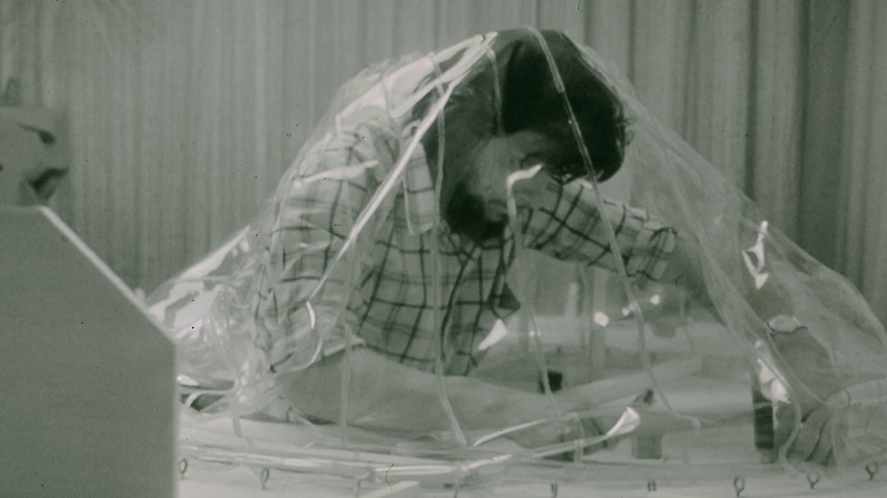

Leven in een ballon: het experiment van A.J. Lode Janssens

Eind jaren zestig besluit de Belgische architect A.J. Lode Janssens om midden in de natuur een experimentele, opblaasbare woning te bouwen voor zichzelf en zijn gezin. Hij haalt inspiratie uit de ruimtevaart en nieuwe synthetische materialen, maar ook uit een eeuwenoud idee: een huis als eenvoudige beschutting tegen de natuurelementen. Met zijn transparante ballonwoning wil hij de grens tussen binnen en buiten zoveel mogelijk laten verdwijnen.
Het resultaat is een uitzonderlijke gezinswoning die tot ver buiten België de aandacht trekt. Maar hoe is het om in zo'n huis te wonen, voortdurend blootgesteld aan het licht, het weer en de wisselende seizoenen? Aan de hand van zeldzaam archiefmateriaal en getuigenissen van onder anderen Janssens en zijn zoon Wouter reconstrueert de documentaire het bijzondere experiment, van de eerste plannen en de moeizame vergunningsprocedure tot het dagelijkse leven in de ballon.
In de winter van 1982 komt het experiment door extreme weersomstandigheden abrupt ten einde. Toch beschouwt Janssens zijn ballonwoning niet als een mislukking. Leven in een ballon vertelt het verhaal van een eigenzinnige architect die de vanzelfsprekendheden van het wonen ter discussie stelde. Zijn experiment roept een vraag op die vandaag nog altijd relevant is: hoe kunnen we anders leven?
- Regie en eindredactie
- Bertrand Lafontaine
- Regie en montage
- Steffen Verpoorten
- Camera, geluid en montage
- Michael Lombarts
- Productie
- CRIT. architects
- AFFR Rotterdam · 07.10.2022
- UrbanEye Film Festival · 24.04.2026